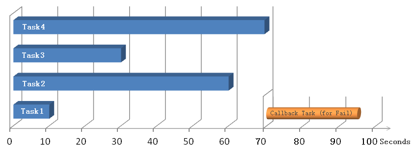
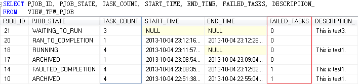
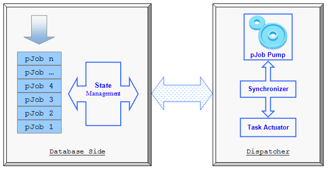
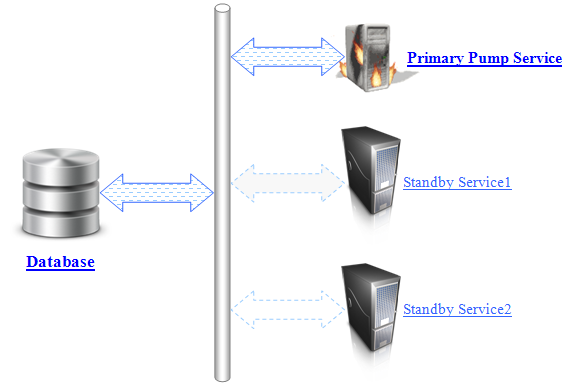

Project Description
The dbParallel is a Database Task Parallel Foundation that provides database developers an application level support for parallel programming. Being distinct from Oracle 11g R2's DBMS_PARALLEL_EXECUTE parallelism within a query by chunks, dbParallel works more
like a .NET Task Parallel Library implemented on database side, it handles the partitioning of the asynchronous job, the scheduling of tasks, state management, and other low-level details in a lightweight implementation.
Get started
A quick example (for Oracle Version)
PROCEDURE TEST_1
AS
tPJob_ID PLS_INTEGER;
tSQL VARCHAR2(256);
BEGIN
tPJob_ID := XYZ.TPW_CALL.CREATE_PJOB('App1', 'User1', 'This is test1.');
tSQL := UTL_LMS.FORMAT_MESSAGE('DBMS_LOCK.SLEEP(%d)', 10);
XYZ.TPW_CALL.ADD_TASK(tPJob_ID, tSQL, 60, 'Task1 sleep for 10 seconds.');
tSQL := UTL_LMS.FORMAT_MESSAGE('DBMS_LOCK.SLEEP(%d)', 70);
XYZ.TPW_CALL.ADD_TASK(tPJob_ID, tSQL, 60, 'Task2 sleep for 70 seconds.');
tSQL := UTL_LMS.FORMAT_MESSAGE('DBMS_LOCK.SLEEP(%d)', 30);
XYZ.TPW_CALL.ADD_TASK(tPJob_ID, tSQL, 60, 'Task3 sleep for 30 seconds.');
tSQL := UTL_LMS.FORMAT_MESSAGE('DBMS_LOCK.SLEEP(%d)', 70);
XYZ.TPW_CALL.ADD_TASK(tPJob_ID, tSQL, 120, 'Task4 sleep for 70 seconds.');
tSQL := UTL_LMS.FORMAT_MESSAGE('DBMS_LOCK.SLEEP(%d)', 15);
XYZ.TPW_CALL.ADD_CALLBACK_FOR_SUCCESS(tPJob_ID, tSQL, 180, 'Sleep for 15s if all success.');
tSQL := UTL_LMS.FORMAT_MESSAGE('DBMS_LOCK.SLEEP(%d)', 25);
XYZ.TPW_CALL.ADD_CALLBACK_FOR_FAIL(tPJob_ID, tSQL, 180, 'Sleep for 25s if fail.');
XYZ.TPW_CALL.START_PJOB(tPJob_ID);
DBMS_OUTPUT.PUT_LINE('New PJob_ID#' || tPJob_ID);
END TEST_1;
The example executes Task1-4 in parallel and when everything is finished, the callback task is executed
(in this case callback will be a fail since task 2 failed - timeout).

Features
Following API list of current version reflects the features:
- XYZ.TPW_CALL.CREATE_PJOB
Each of the above sample processing units are called a PJob. PJob represents an asynchronous operation. This method returns a pJob Id for below methods (2, 3, 4, 5, 6).
- XYZ.TPW_CALL.ADD_TASK
Each pJob contains one or more parallel tasks. Each task is a dynamic SQL. Call the ADD_TASK multiple times to add every parallel tasks into the pJob.
- XYZ.TPW_CALL.ADD_CALLBACK_FOR_SUCCESS
This is a optional method. Since a pJob is asynchronous, the callback Task is called to execute a continuation when all the parallel Tasks successfully completed.
- XYZ.TPW_CALL.ADD_CALLBACK_FOR_FAIL
This is a optional method. Similar but opposite to previous callback for success, the callback Task for fail is called to execute a continuation when all the parallel Tasks completed but any of them throw out database exception(s).
- XYZ.TPW_CALL.START_PJOB
Starts the pJob, scheduling it for execution. - XYZ.TPW_CALL.TRY_CANCEL_PJOB
Try to cancel a scheduled pJob if it hasn't begin to execute. - XYZ.TPW_CALL.START_NEW_SINGLE_TASK
This method encapsulates a series of steps for conveniently creating and starting single task and callback task.
- XYZ.TPW_CALL.WAIT_PJOB
Waits for all provided Tasks (parallel subtasks and callback task) of a pJob to complete execution.
To support this method, Oracle version utilizes the signaling mechanism come from SYS.DBMS_ALERT package; SQL Serverv version imitates it by a polling loop at present.
(XYZ is the schema name, it should be replaced by your schema name)
Open the source code of Oracle package TPW_CALL (or SQL Server stored procedures with prefix TPW_CALL_) for detail parameters.
Status Inquiry
- VIEW_TPW_PJOB
Displays pJobs' current status:

- PJOB_STATE
Just current state. (VIEW_TPW_WK_LOG provides historical state transitions)
Each pJob is born as CREATED state, and dies as ARCHIVED state. The real time state is visible during pJob's lifetime. Every pJob, irrespective of high or low ... the final state is equal -
ARCHIVED. - TASK_COUNT
The total number of parallel tasks contained in the pJob.
(not including any callback task - neither for success nor for fail)
- START_TIME
The actual time of when the pJob get started. - END_TIME
The actual time of when all parallel tasks of the pJob get completed. - FAILED_TASKS
How many parallel tasks failed under the pJob.
(not including any callback task - neither for success nor for fail)
- VIEW_TPW_TASK
Detail execution information about every parallel tasks.
(also including callback tasks - for success and for fail)
- VIEW_TPW_WK_LOG
History of pJobs' internal state transition.
[Old State] >==Event==> [New State]
How It's Made
- Database Side
Each pJob is added into the Scheduler, and then the State Manager controls every stage in the lifecycle of the pJob.
- Windows Service Side
At least one Pump Service must reside in Windows Services (or other hosting environment) act as a dispatcher, as shown in the following figure:

The dispatcher executes each of the provided tasks, possibly in parallel. No guarantees are made about the order in which the tasks execute or how many degree of parallelism. All tuning settings are located in TPW_PUMP_CONFIG table.
Each Task of a pJob is actually executed in the database through its separate connection. In other words, each Task runs in a different database session. Temporary table and transaction can not be expected to cross Tasks.
Service Mode - (Primary Mode | Standby Mode)
A Pump Service always starts up in Standby Mode. Multiple Standby Services can keep running for the same database, one of them will switch to Primary Mode when none Primary Service is active.

Security Model
- To create or operate a pJob:
The user must have EXECUTE privilege on the package TPW_CALL - for Oracle version;
(Underlying stored procedures with prefix of "TPW_CALL_" for SQL Server version)
- To execute Task's SQL:
As a ultimate executor, the security account of Pump Service must have privileges to execute Tasks' SQL.
Applicability
The original intention of dbParallel is designed for time consuming database processing with one or more independent tasks can run concurrently. Not all processing is suitable for parallelization; for example, if a batch job performs
only a small amount of work on each subtask, or it doesn't run for more than one second, then the overhead of parallelization can cause the processing to run more slowly. Besides, some special attention (e.g. locks, deadlocks, and race conditions) can not
be ignored.
System Requirements
- Supported Databases:
- Oracle (dev and test on version 11g R1 and R2, hasn't try on earlier version);
- SQL Server 2005 or later version;
- Windows Service:
- .NET Framework 4.0 Client Profile or higher versions
- ADO.NET Provider:
- Oracle
- ODP.NET Managed Driver
- Or - ODP.NET 4
- Or - DataDirect Connect for ADO.NET v3.5
(the provider can be easily replaced by other provider for Oracle with the source code)
- SQL Server
- .NET Framework build-in SqlClient provider.
- Source Code:
At present the dbParallel only support Oracle and SQL Server.
Contributions
- Welcome all feedback through the CodePlex project (through comments, patches, or items in the Issue Tracker);
Support
Feel free to use the source in your apps, and products.
This project is developed in personal time, the source code support can be available only at night - Easten Time (US & Canada).